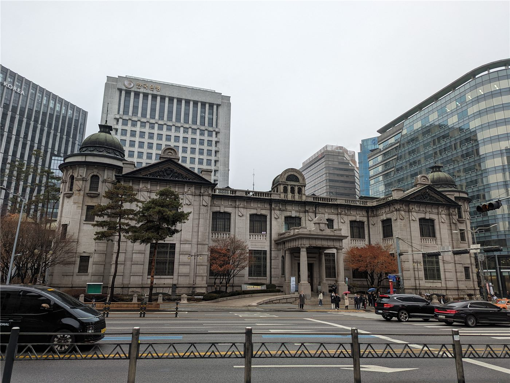

한국은행, 기준금리 연 3.0%로… 3년 7개월 만의 '두 달 연속 인상'

한국은행 금융통화위원회는 27일 통화정책방향 결정회의를 열고 기준금리를 연 2.75%에서 3.0%로 0.25%포인트 인상했다. 지난달 2.50%에서 2.75%로 올린 데 이은 연속 인상으로, 두 달 연속 금리를 올린 것은 2022년 4월부터 2023년 1월까지 이어진 일곱 차례 연속 인상 이후 3년 7개월 만이다.
광고 문의 · 300×250이번 결정은 금통위원 7명 가운데 6명의 찬성으로 이뤄졌다. 위원 1명은 동결 의견을 냈다. 한국은행은 결정문에서 근원물가 오름세가 예상보다 더디게 둔화되고 있고 국제유가가 반등하면서 물가 상방 위험이 커졌다고 진단했다.
왜 지금 올렸나
한은이 든 근거는 크게 세 가지다. 첫째, 식료품과 에너지를 뺀 근원물가가 목표치 위에서 좀처럼 내려오지 않고 있다는 점이다. 둘째, 국제유가가 다시 오르면서 앞으로 몇 달간 물가를 밀어 올릴 가능성이 커졌다는 점이다. 셋째, 원화 약세가 수입물가를 통해 국내 물가로 전이되는 경로가 여전히 열려 있다는 점이다.
신현송 총재는 회의 뒤 기자설명회에서 '늦으면 가래로 막게 된다'는 표현을 써 선제적 대응의 필요성을 강조했다. 물가 오름세가 특정 품목을 넘어 전반으로 확산되기 전에 차단하는 것이 결과적으로 비용이 적게 든다는 취지다. 그는 원·달러 환율에 대해서도 '아직 높은 수준'이며 원화가 더 강해질 여지가 있다고 언급했다.
시장은 어떻게 읽었나
채권시장은 이번 인상을 대체로 예상하고 있었다. 앞서 시장 전문가 7명 가운데 4명이 8월 인상을 점쳤고, 단기 국고채 금리에는 인상 기대가 상당 부분 반영돼 있었다. 관심은 이제 '몇 번 더, 어디까지'로 옮겨갔다.
다만 연속 인상이 확인되면서 통화정책의 방향 자체가 긴축 쪽으로 돌아섰다는 해석에는 이견이 적다. 부동산 프로젝트파이낸싱과 가계부채 부담을 고려하면 인상 속도는 완만할 것이라는 관측과, 물가가 잡히지 않으면 추가 인상이 불가피하다는 관측이 함께 나온다.
화인 가계·자영업에 미치는 영향
기준금리 인상은 시차를 두고 대출금리에 반영된다. 변동금리 주택담보대출과 신용대출을 쓰는 가계는 다음 금리 변경일부터 이자 부담이 늘어난다. 인천·서울 대림동·부산 일대에서 음식점과 무역업을 하는 화인 자영업자 가운데 사업자 대출을 낀 경우가 적지 않아, 상환 계획을 다시 점검할 필요가 있다.
반대로 예금·적금 금리는 오른다. 학비나 정착 자금을 원화로 모으고 있는 유학생·이주 가정에는 유리한 방향이다. 환율 측면에서는 금리 인상이 원화 강세 요인으로 작용할 수 있어, 본국으로 송금하는 쪽은 부담이 줄고 해외에서 받는 쪽은 이익이 줄어드는 구조다.
다만 금리와 환율은 예측의 영역이 아니다. 본지는 판단의 재료를 제공할 뿐이며, 대출·송금·투자 결정의 책임은 개인에게 있다는 점을 분명히 밝힌다.
제3의 시각: 같은 물가, 다른 처방
같은 시기 미국 연방준비제도와 유럽중앙은행은 서로 다른 속도로 움직이고 있다. 각국의 물가 구조와 고용 사정, 통화가치 방어의 우선순위가 다르기 때문이다. 華橋時報는 한국의 결정을 '옳다·그르다'로 재단하지 않고, 어떤 조건에서 어떤 선택이 나왔는지를 나란히 보여주는 데 무게를 둔다. 판단은 독자의 몫이다.
· 한국은행 금융통화위원회 통화정책방향 결정문 2026-08-27
· 머니투데이 2026-08-27 속보
· 경향신문 2026-08-28